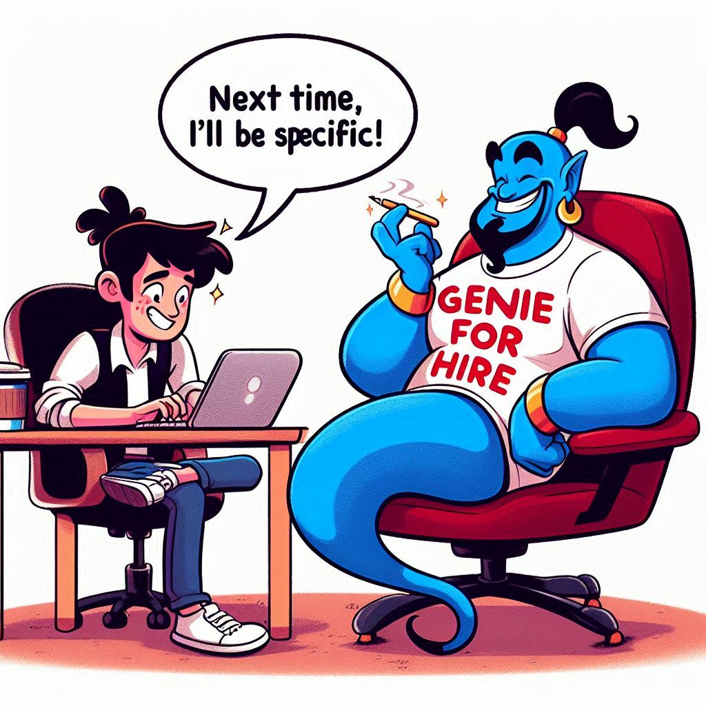
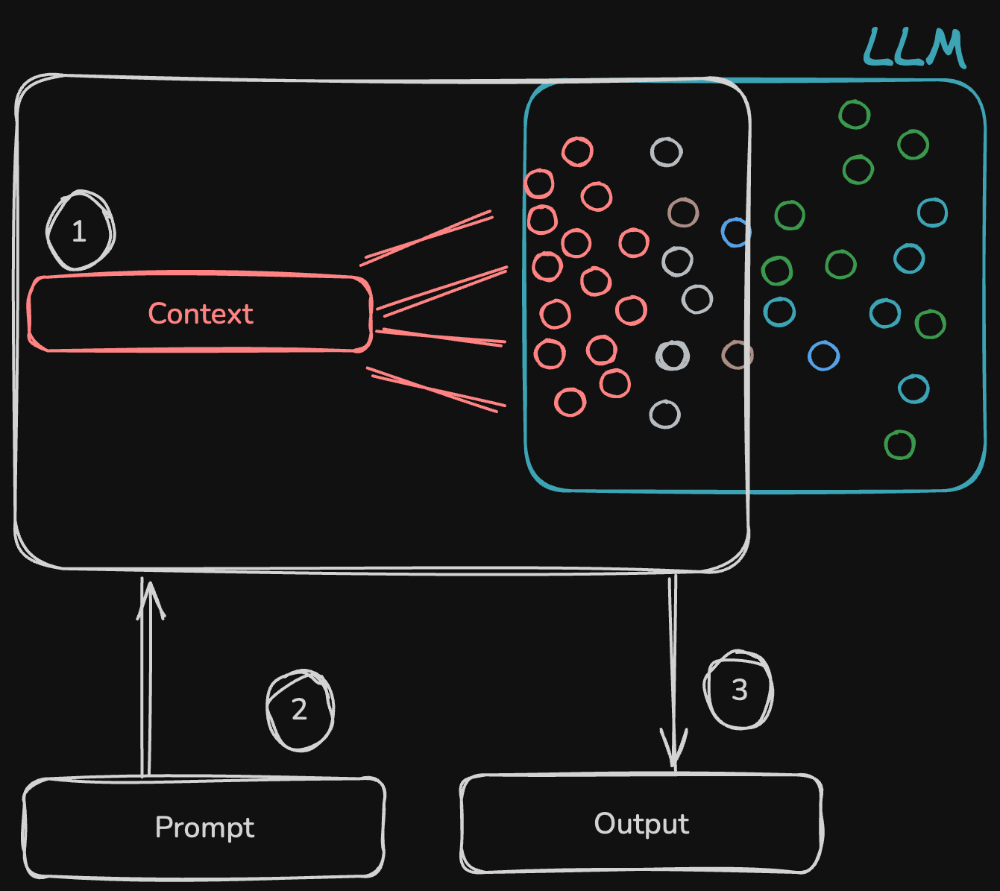
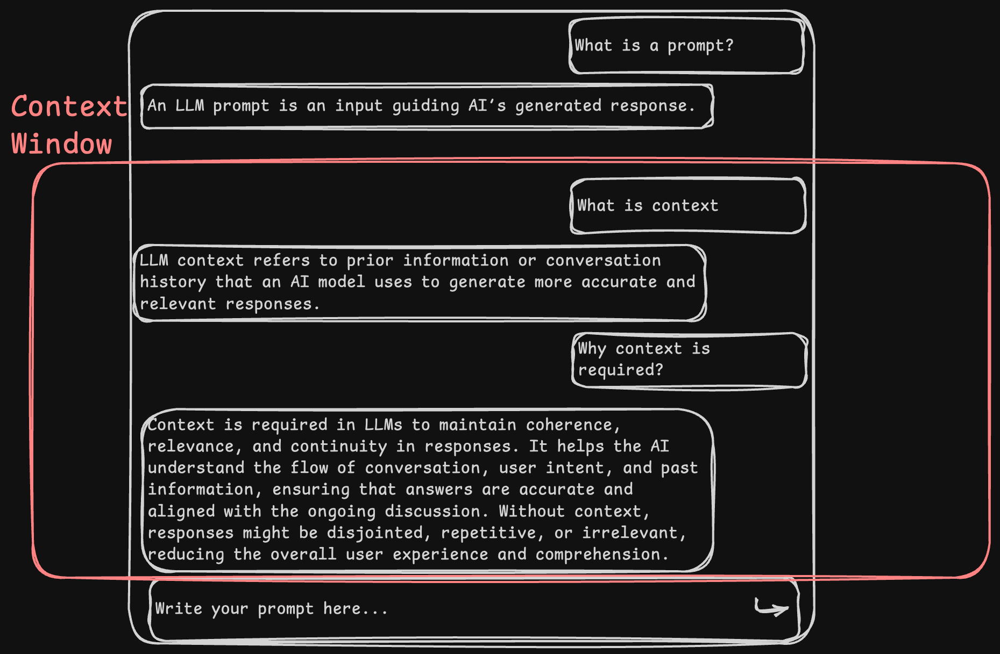

LLM Fundamentals
For Developers
Vibe Check

______ + ______ + ____ = *desired output.
Prompts
An LLM prompt is an input guiding AI’s generated response.
Prompt
"Write a program in JavaScript to sort an array.”
- is it a good prompt?
Good Prompt
"Write a JavaScript function that sorts an array of numbers in descending order. The function should handle edge cases such as:
- An empty array.
- Arrays with duplicate numbers.
- Arrays containing both positive and negative integers.
Detailed Prompt + ______ + ____ = *desired output.
Context
Context tells the LLM what your prompt is about.

Context Window
The number of tokens (words) the LLM can accept as context.

Tips
- Only add relevant context. No too much but not too less either.
- Create a new chat for different context.
- Don't chat for too long in a single session/window as context window will be exceeded.
How to supply context to LLM?
- Coding Assistants use open files as context.
- Other tools uses codebase indexing and embeddings to supply context.
Detailed Prompt + Decent context + ____ = *desired output.
The Model
But what is a good model?
- Generally larger models are better. But it depends on their training data.
- The model that are tailored for your needs.
- Like Github copilot, Gemini code assist is for coding, Stable Diffusion is for images. etc
- Using specific models for specific tasks is better.
- Large model is not equals to large context window. Setting a large context window is an model architecture decision.
Detailed Prompt + Decent context + Good Model = *desired output.
ChatGPT vs Coding Assistants
- Trained for coding.
- Multi model support for various purposes.
- IDE integrations, integrated chat, autocompletion via APIs.
- Auto Context awareness
Codebase Indexing and Embeddings
- Trained for coding.
- Multi model support for various purposes.
- IDE integrations, integrated chat, autocompletion via APIs.
- Auto Context awareness
Takeaways
- Put your mind into the prompt.
- Be mindful of the context.
- For Models: Bigger is better.
- Using coding assistance is the future. It will get better.